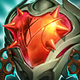
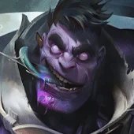
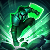
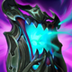
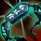

核心裝備

雄心之鋼五人單線很容易反覆接近敵方英雄疊最大生命，與蒙多所有生命比例收益高度契合。
 好戰者鎧甲
好戰者鎧甲高生命成形後可在團戰間快速回滿，讓蒙多反覆重新站到前排。
 荊棘之甲
荊棘之甲物理普攻與吸血陣容常見，護甲與重創能同時壓低對方續航。
 自然之力
自然之力面對多法傷時提供高魔抗與移速，讓追擊更穩。
 雅瑪蘭守護像
雅瑪蘭守護像後期長團戰快速疊滿雙抗，把高生命轉成真正難以擊殺的前排。

Dr. Mundo · 高生命前排／持續追擊型坦克
前期用 1 技消耗與補刀，不要沒裝備就直走五人。中後期開 2 技後再進場吃傷害，大絕通常在血量掉到約一半前後就應開，不要等到快死才按；被動藥劑能安全撿才撿。
本站評級理由：ARAM 的正面拉扯讓蒙多能持續用 1 技消耗與減速，生命裝成形後很難被快速處理；被動還能抵銷第一個硬控。但他缺乏真正的硬控與瞬間開戰能力，且重創會明顯限制大絕，因此維持 S。
7.2a 的 Dr. Mundo「承傷 100%→110%」列在 AAA ARAM Champion Adjustments，且沒有像塔莉雅／史加納一樣標註同步標準 ARAM，因此本站不把該數值誤套到一般 ARAM。

五人單線很容易反覆接近敵方英雄疊最大生命，與蒙多所有生命比例收益高度契合。
高生命成形後可在團戰間快速回滿，讓蒙多反覆重新站到前排。
物理普攻與吸血陣容常見，護甲與重創能同時壓低對方續航。
面對多法傷時提供高魔抗與移速，讓追擊更穩。
後期長團戰快速疊滿雙抗，把高生命轉成真正難以擊殺的前排。

敵方物理與普攻多時最穩；法傷控制多則改水星之靴。

升級三級鞋後進一步提高物理承傷與生存。
長時間貼前排時可反覆觸發，增加生命、治療與傷害。

提高雙防與多人近身時的坦度，適合正面承傷。

被遠程消耗時持續恢復，讓進場前保有更高血線。

ARAM 小兵死亡密集，能穩定堆高最大生命。

蒙多常在低血時開大反打，能放大殘血階段的威脅。

補追擊距離、跨越控制區或在大絕結束前撤回。

提高長時間追人與黏住後排的能力，特別符合蒙多缺硬位移的弱點。
1 技 > 3 技 > 2 技
ARAM 開局三個基礎技能各點 1 級，之後主升 1 技、次升 3 技；大絕能點就點。
沒有核心生命裝前先靠 1 技遠距消耗，別為了撿被動藥劑走進五人火力。
雄心之鋼與好戰者成形後可以主動站前。進場前先確認敵方重創與高爆發技能，2 技開著吃第一輪後再決定是否繼續追。
大絕要提早開，讓治療完整跑完。你的工作是逼後排後撤、吸收技能並拖時間，不需要硬追到敵方塔下才算成功。

無盡絕望可替換好戰者或一件抗性裝，增加貼身續戰。
 蘭頓之兆
蘭頓之兆替換自然之力或一件功能裝以降低暴擊威脅。

凱尼克欺瞞者需要更專注抗魔時可替換荊棘之甲。
看遊戲卡片下方分類 → 點相同分類 → 看左側 S+／S／A。
最大生命就是蒙多最重要的資源，體型與生命增幅會直接放大坦度與持續作戰。
原版雄心之鋼、高生命與保命類單卡都和蒙多目前出裝、玩法直接連動。
坦度、緩速抗性與貼身反制適合蒙多開大後一路往前壓。
三技能強化普攻且會長時間黏人，生命轉傷害型普攻增幅特別合適。
大絕與鬼步都強調追擊，額外跑速能讓蒙多更難被風箏。
一技能飛刀與二、三技能仍能利用部分技能增幅，但不是主要傷害軸。
7.2b ARAM S 第六批：蒙多採標準 ARAM 100% 基準；7.2a 的 110% 承傷沒有「同步 ARAM」註記，因此不混入 AAA ARAM 專屬調整。
ARAM 使用獨立於召喚峽谷的資料集；本站會把官方模式平衡、單線 5v5 特性與出裝／符文適配分開判斷，而不是直接複製峽谷配置。